SideStep is a small macOS menu-bar app that installs iOS apps onto your own iPhone or iPad using your own Apple ID (a free one works). No jailbreak, no special hardware.
SideStep re-signs and reinstalls your apps in the background within Apple’s allowed 7-day window, so they behave like a normal, permanently-installed app. It can do this over Wi-Fi, with no cable — which makes putting an app on your own iPhone about as easy as it already is on Android.
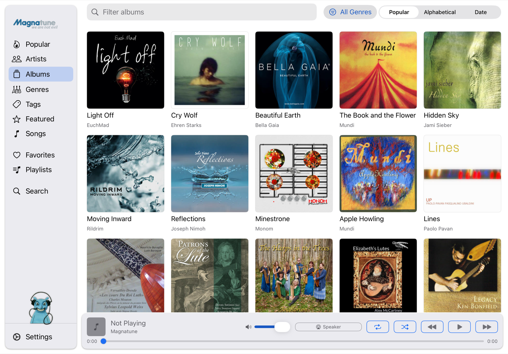
SideStep has a built-in catalog of legitimate, sideloadable apps you can search and install directly:
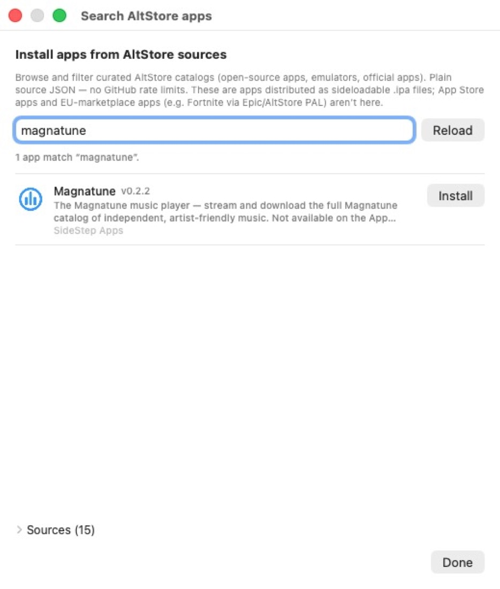
Download
SideStep (notarized .dmg) — macOS 14 (Sonoma)
or newer, Apple Silicon.
Open the .dmg and drag SideStep to
Applications. It’s signed with an Apple
Developer ID and notarized by Apple,
so it opens without the right-click / “Open Anyway” step. SideStep runs
in the menu bar — a small crate icon
,
with no Dock icon. Click it to open the panel below.
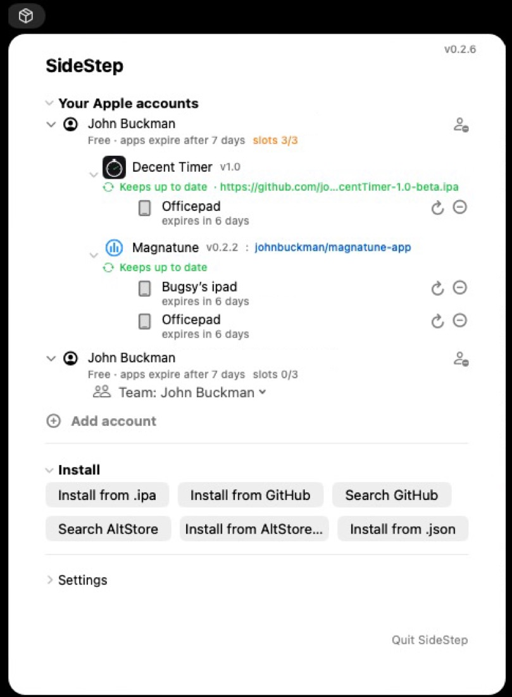
.ipa file.
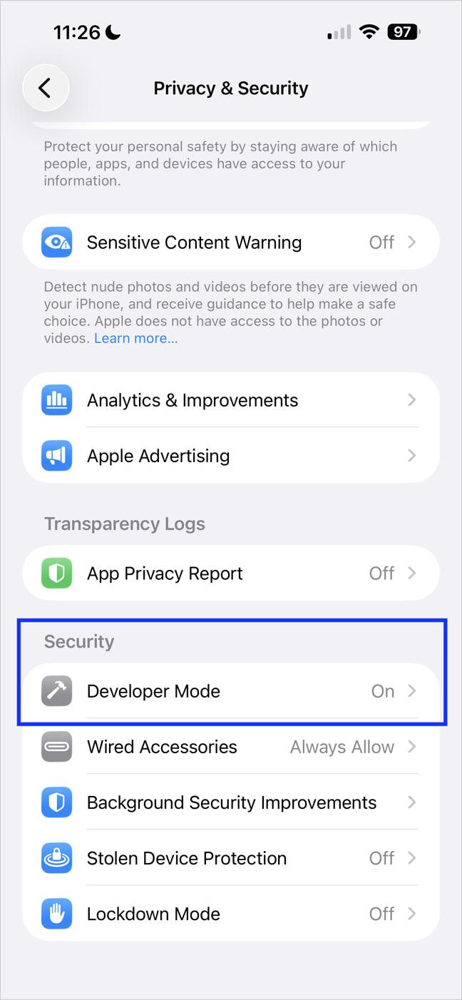
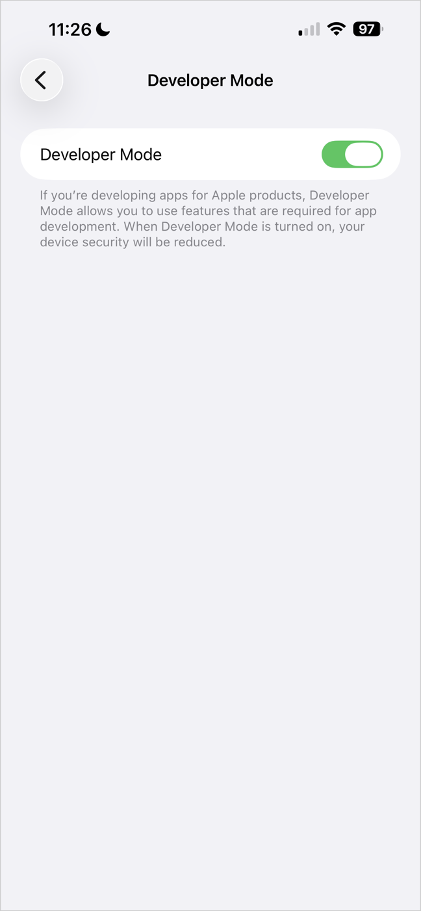
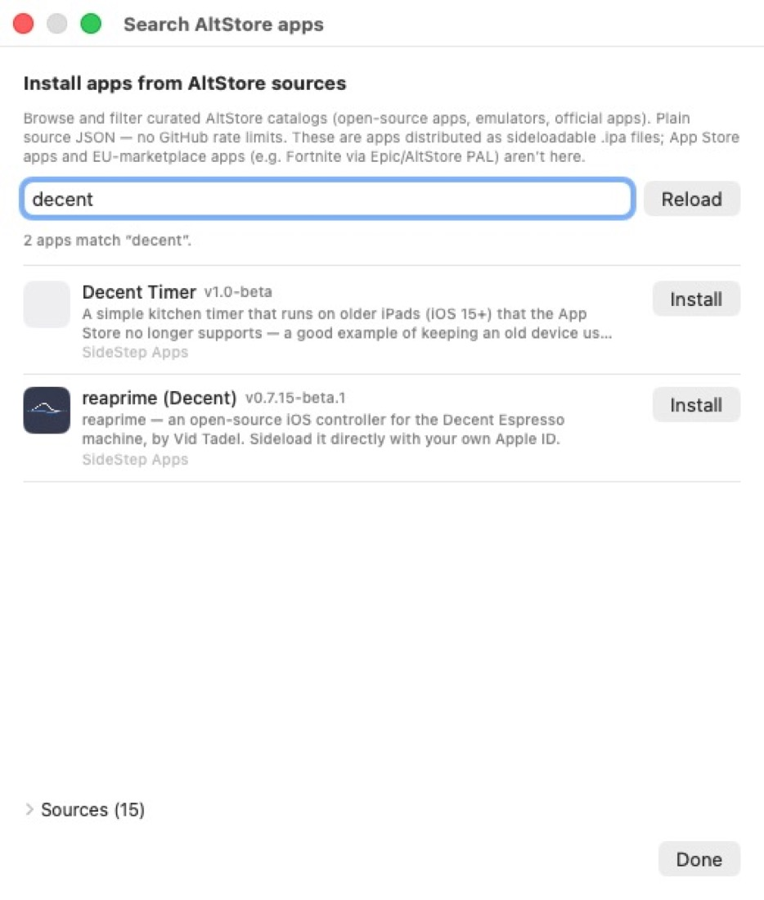
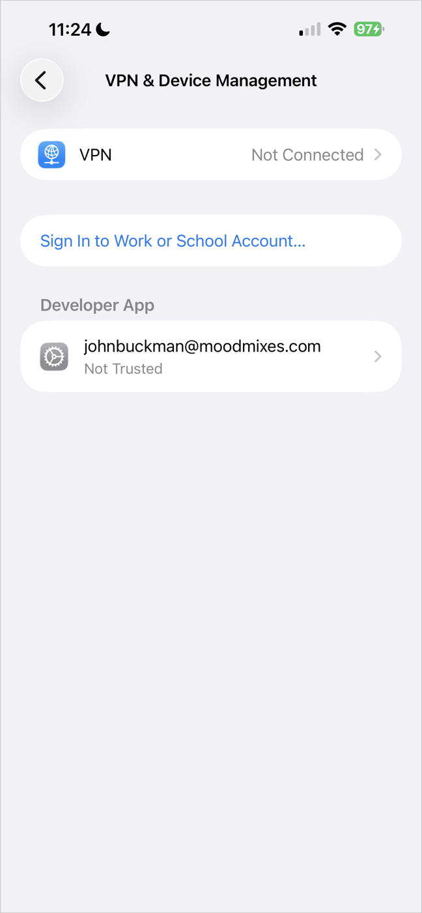
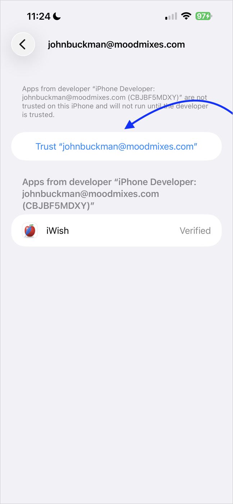
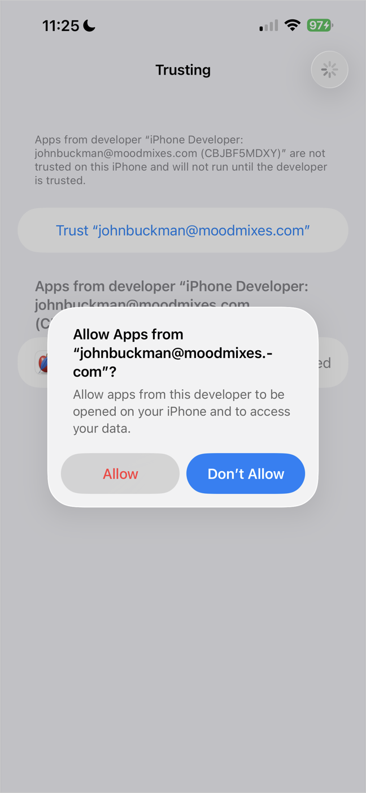
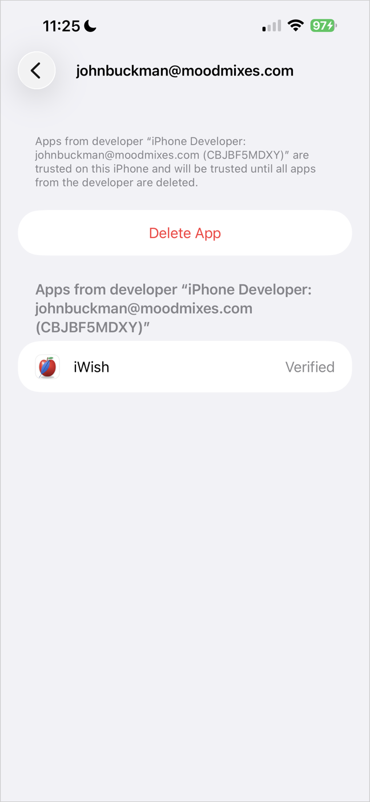
After the first install, adding more apps works over Wi-Fi: as long as the device is on and unlocked, you don’t need to plug it in.
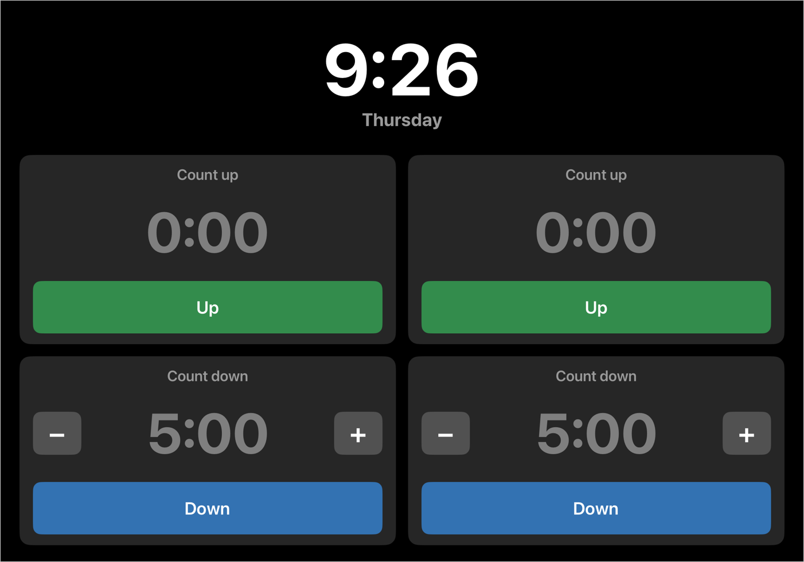

SideStep Wizard lets an app developer hand anyone a single file that installs their app — no Xcode and no developer account on the other end. You point it at your app’s GitHub repo once, and it produces a small “<name> installer” you can send to people or link from your website. See the SideStep Wizard site →
Try it — this button installs Magnatune (a music player) with SideStep:
If you already have SideStep, the button opens it straight to Magnatune — tap Install. If not, it offers the Magnatune installer, which installs SideStep first and walks you through the setup.
.dmg) and open
it..ipa) and an app name. The wizard
looks up the repo’s GitHub id — no URL shortener, nothing to register.The installer is the same signed, notarized app, just renamed — so it opens with no Gatekeeper warning. It bundles no copy of SideStep; it downloads the latest SideStep at run time, so nobody is stuck on a stale version. Host it wherever you like — for example, as a Release asset on your app’s repo — and point the website button at it.
Every app SideStep installs carries a small piece of code called a beacon. When you open the app, it tells your Mac that the device is present and unlocked. If a newer version of the app exists, your Mac signs it and sends it to the device over Wi-Fi in the background; the app applies the update the next time you close and reopen it. No cable, no prompts, no App Store.
This is what keeps a sideloaded app from expiring: instead of dying after a week and needing a manual reinstall, it stays signed and current on its own.
Every app SideStep installs has a hidden status panel. To open it, press and hold two fingers in any two corners of the screen at the same time (for example, top-left and top-right) for about 1.5 seconds. It’s an awkward gesture on purpose, so you won’t trigger it by accident.
The panel shows which Apple ID signed the app, when it was last refreshed, when the signature expires, and an Update app now button.
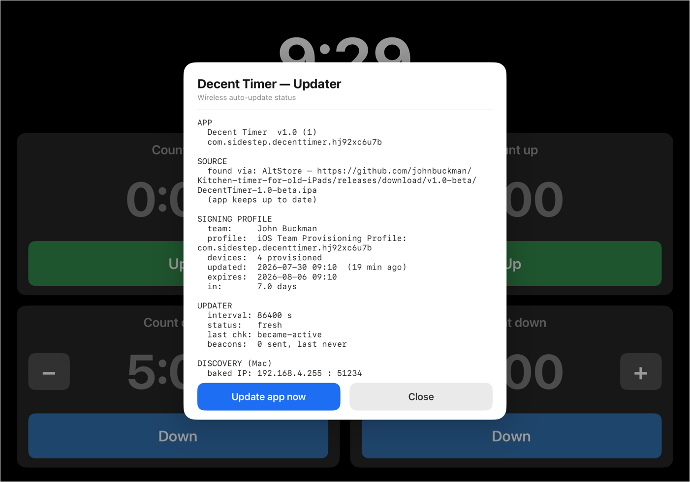
I make espresso machines, and our software is written in Tcl/Tk — a language the App Store won’t accept. To get our app onto customers’ iPads I needed a way to sideload it and keep it updated without asking every customer to plug into a Mac each week. SideStep is the result. It works just as well for any app you want on your own device without going through the Store.
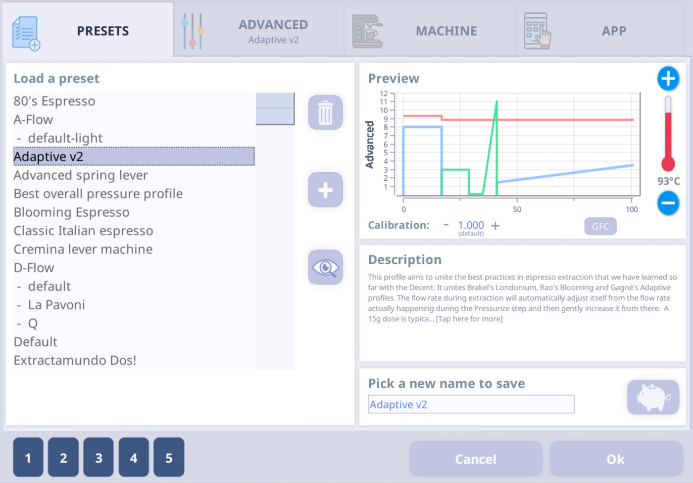
To make that work I ported Tcl/Tk to iOS. Below is that environment (iWish) running on an iPad and talking to Bluetooth hardware.
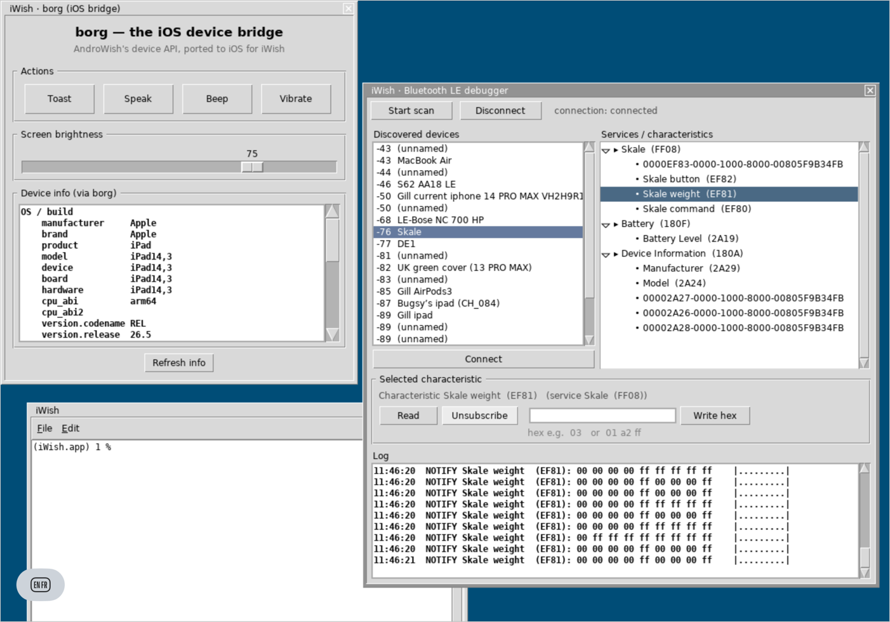
lockdown / usbmux), via the
open-source libimobiledevice.Apple’s free signatures last 7 days, and SideStep normally re-signs your apps well before then, in the background. But if a device is switched off or off the network for longer than that — for example an iPad that runs out of battery and sits unused for a couple of weeks — its apps’ signatures can lapse, and those apps won’t open until they’re re-signed.
Getting them back is quick:
SideStep re-signs the app with a fresh 7-day signature and reinstalls it over Wi-Fi — no cable needed, as long as the device is unlocked and reachable. Nothing has to be deleted or set up again: Developer Mode and the trust from the first install still apply, and SideStep signs you back in on its own if your login has lapsed.
If several apps on that device expired, you only have to do this once — tapping refresh on one expired app automatically refreshes the other expired apps on the same device too.
SideStep-installed apps only run while Developer Mode is on. If you turn Developer Mode off, those apps will stop opening until you turn it back on. To re-enable them:
After that, your sideloaded apps open normally again.
SideStep exists for one reason: to install legitimate open-source and self-published apps — the kind Apple’s Store won’t carry, like our own espresso-machine software. It is not a way to install cracked copies of paid App Store apps, and it actively works to stay that way:
The blocklist is public and updated from the repository, so it can grow as new pirate sources turn up. The point is to keep SideStep useful for the independent and open-source apps it was built for — and not much use for anything else.
swift build --product InstallerApp # the menu-bar app
swift build --product Provision # the command-line tool (install / refresh)./bundle-app.sh builds and bundles the menu-bar app into
SideStep.app. The device tools (a small libimobiledevice
helper in Helpers/idevice)
ship inside the app, so it’s self-contained — no Python or external
tools required at runtime.
Contributing, or an AI agent picking up the project? Start with docs/AI-BOOTSTRAP.md,
then docs/CURRENT-STATE.md.
Built on AltSign from
the AltStore /
SideStore
projects (© Riley Testut and contributors), licensed
AGPL-3.0. As a derivative work, SideStep is likewise
licensed under the GNU Affero General Public License
v3.0 — see LICENSE.
The signer is zsign by zhlynn,
included under the MIT License (see Dependencies/zsign).